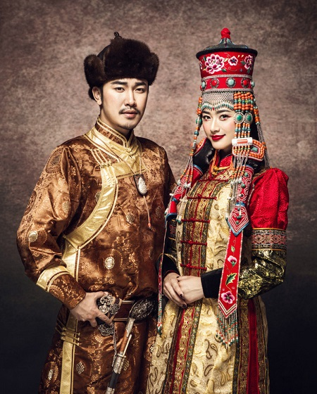

蒙古族

蒙古族，是主要分布于东亚地区的一个传统游牧民族，是中国的少数民族之一，
同时也是蒙古国的主体民族。此外，蒙古族在俄罗斯等亚欧国家也有分布，
鄂温克族和土族也有时被认为是蒙古族的分支。
蒙古族始源于古代望建河（今额尔古纳河）东岸一带。
13世纪初，以成吉思汗为首的蒙古部统一了蒙古地区诸部，逐渐形成了一个新的民族共同体。
蒙古族人民世居草原，以畜牧为生计。过着“逐水草而居”的游牧生活，
尽管这种生存方式在现代社会被弱化，但仍然被视作蒙古族的标志。
蒙古族在科学文化事业上比较发达，而且音乐、舞蹈也在艺术上居于相对显赫的地位。
蒙古最初只是蒙古诸部落中的一个以东胡为族源的部落所使用的名称，
后来逐渐吸收和融合了聚居于漠北地区的森林狩猎和草原游牧部落，发展成为这些部落的共同名称。